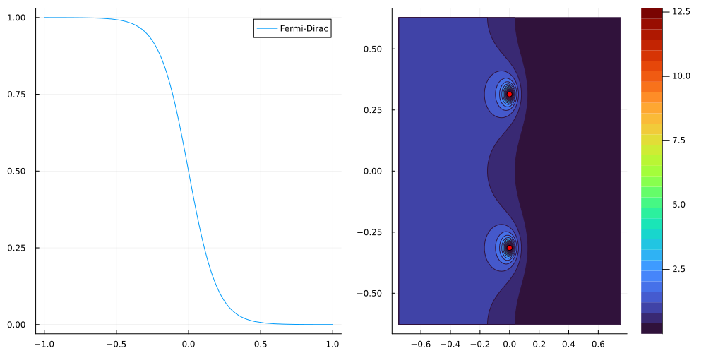
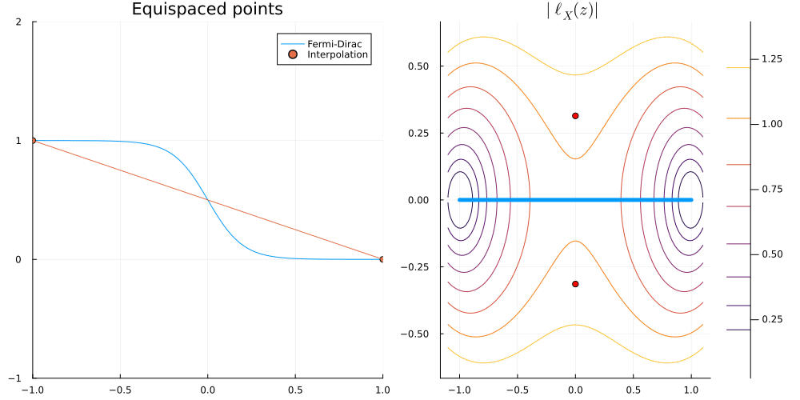
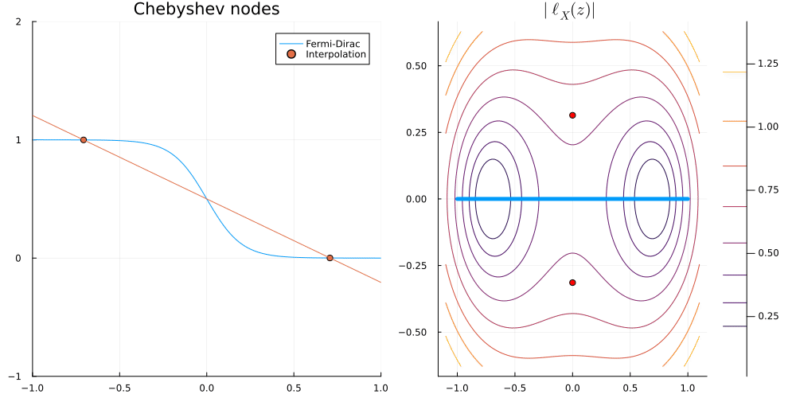
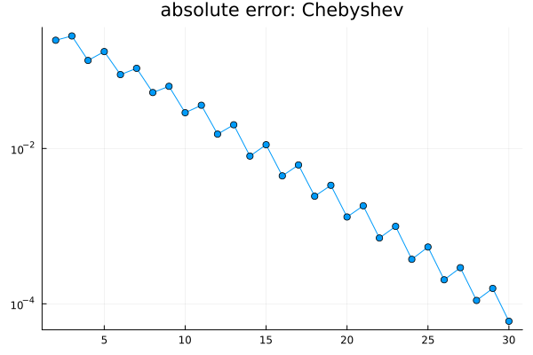
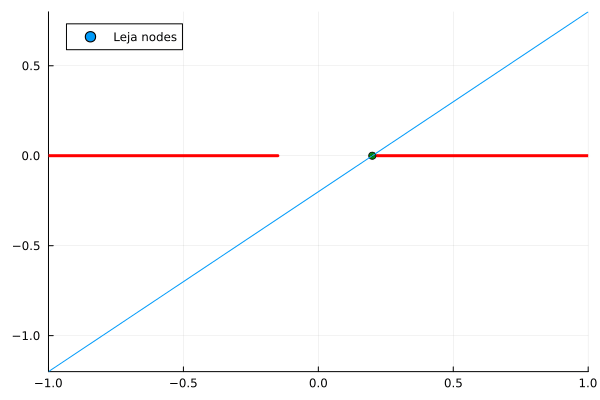
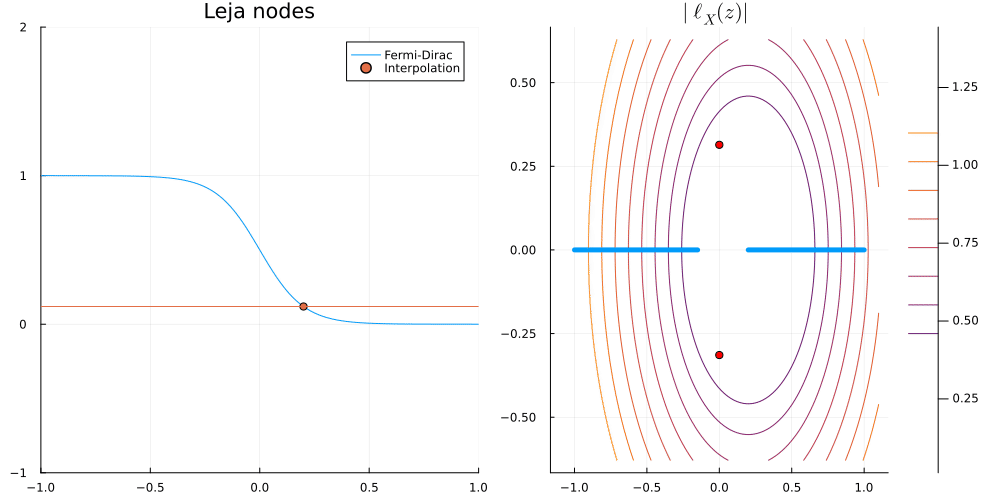
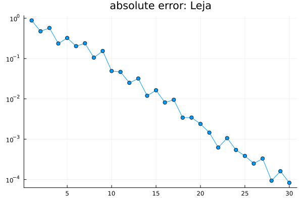

Given at:
- September 2025 – Group meeting
- October 2023 – Journée de rentrée de l’équipe, IHES
Group meeting (September 2025)
- Based on Thomas et al. (2022),
- slides
- slides - quadrature
- notes

Equispaced nodes

Chebyshev nodes

plt3 = plot( 2:N, err[2:N], marker=:circle, yaxis=:log, title="absolute error: Chebyshev", legend=false)
What about approximation on \([-1, a] \cup [b, 1]\)?
Leja points:


plot( 1:N, err, marker=:circle, yaxis=:log, title="absolute error: Leja", legend=false)
Journée de rentrée de l’équipe, IHES (October 2023)
References
Thomas, Jack, Huajie Chen, and Christoph Ortner. 2022. “Body-Ordered Approximations of Atomic Properties.” Archive for Rational Mechanics and Analysis 246 (1): 1–60. https://doi.org/10.1007/s00205-022-01809-w.